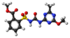

metsulfuron-methyl

Definition: Metsulfuron-methyl is an organic compound classified as a sulfonylurea herbicide, which kills broadleaf weeds and some annual grasses. It is a systemic compound with foliar and soil activity, that inhibits cell division in shoots and roots. It has residual activity in soils, allowing it to be used infrequently but requiring up to 22 months before planting certain crops (sunflowers, flax, corn, or safflower). It has very low toxicity to mammals, birds, fish, and insects but is a moderate eye irritant.
Source: Wikipedia
Wikipedia Page
Wikidata Page